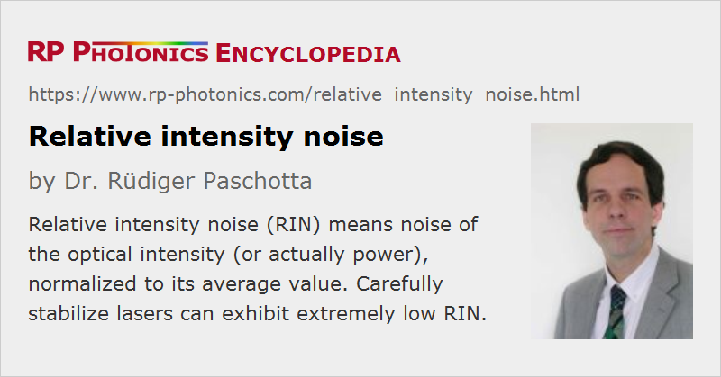

Relative Intensity Noise
Acronym: RIN
Definition: noise of the optical intensity (or actually power), normalized to its average value
More general term: intensity noise
German: relatives Intensitätsrauschen
Categories: lasers, fluctuations and noise
How to cite the article; suggest additional literature
Author: Dr. Rüdiger Paschotta
In the context of intensity noise (optical power fluctuations) of a laser, it is common to specify the relative intensity noise (RIN), which is the power noise normalized to the average power level. The optical power of the laser can be considered to be
with an average value and a fluctuating quantity δP with zero mean value. The relative intensity noise is then that of δP divided by the average power; in the following, this quantity is called I. The relative intensity noise can then be statistically described with a power spectral density (PSD):
which depends on the noise frequency f. It can be calculated as the Fourier transform of the autocorrelation function of the normalized power fluctuations (see the equation), or measured e.g. with a photodiode and an electronic spectrum analyzer. (The factor of 2 in the formula above leads to a one-sided PSD as usually used in the engineering disciplines.) The units of this RIN PSD are Hz−1, but it is common to specify 10 times the logarithm (to base 10) of that quantity in dBc/Hz (see also: decibel). The PSD may also be integrated over an interval [f1, f2] of noise frequencies to obtain a root mean square (r.m.s.) value of relative intensity noise
which is then often specified in percent.
Note that it is not sensible (although common) to specify relative intensity noise in percent (e.g. as ±0.5%) without clarifying whether this means an r.m.s. value or something else. See the article on noise specifications for more such details.
RIN from Shot Noise
It might be expected that the amount of RIN of a laser beam will remain constant when the beam is subject to linear attenuation. This is not true, however, when the RIN is limited by shot noise. In that case, the RIN is given by
As an example, a 1-mW laser beam at 1064 nm with intensity noise at the shot noise limit has a RIN of 3.73 × 10−16 Hz−1 or −154 dBc/Hz.
This PSD is independent of noise frequency (white noise), and it increases with decreasing average power. This can be understood as the introduction of additional quantum noise in the attenuation process.
Quantum-limited RIN measurements should be done by detecting the entire laser power e.g. with a photodiode, while minimizing the influence of excess noise (e.g. thermal noise) from the electronics.
Questions and Comments from Users
Here you can submit questions and comments. As far as they get accepted by the author, they will appear above this paragraph together with the author’s answer. The author will decide on acceptance based on certain criteria. Essentially, the issue must be of sufficiently broad interest.
Please do not enter personal data here; we would otherwise delete it soon. (See also our privacy declaration.) If you wish to receive personal feedback or consultancy from the author, please contact him e.g. via e-mail.
By submitting the information, you give your consent to the potential publication of your inputs on our website according to our rules. (If you later retract your consent, we will delete those inputs.) As your inputs are first reviewed by the author, they may be published with some delay.
See also: intensity noise, noise specifications, quantum noise
and other articles in the categories lasers, fluctuations and noise
|  |
If you like this page, please share the link with your friends and colleagues, e.g. via social media:
These sharing buttons are implemented in a privacy-friendly way!